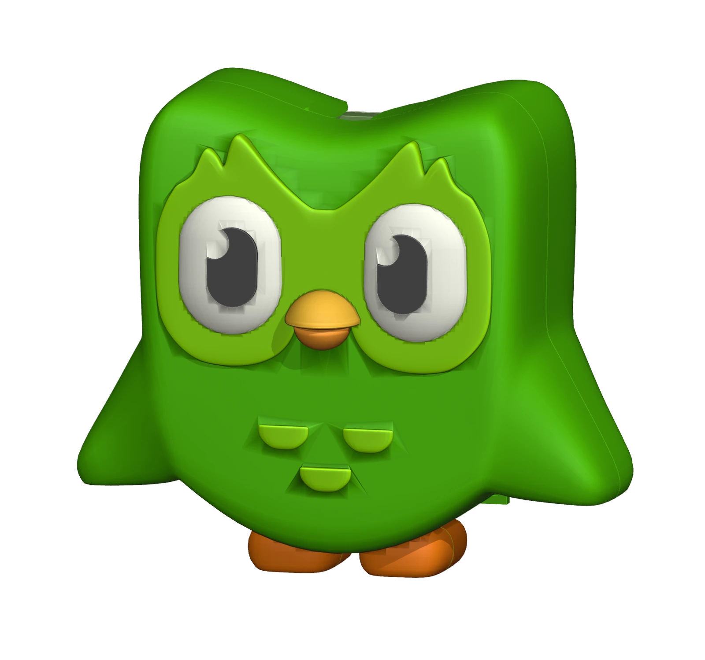
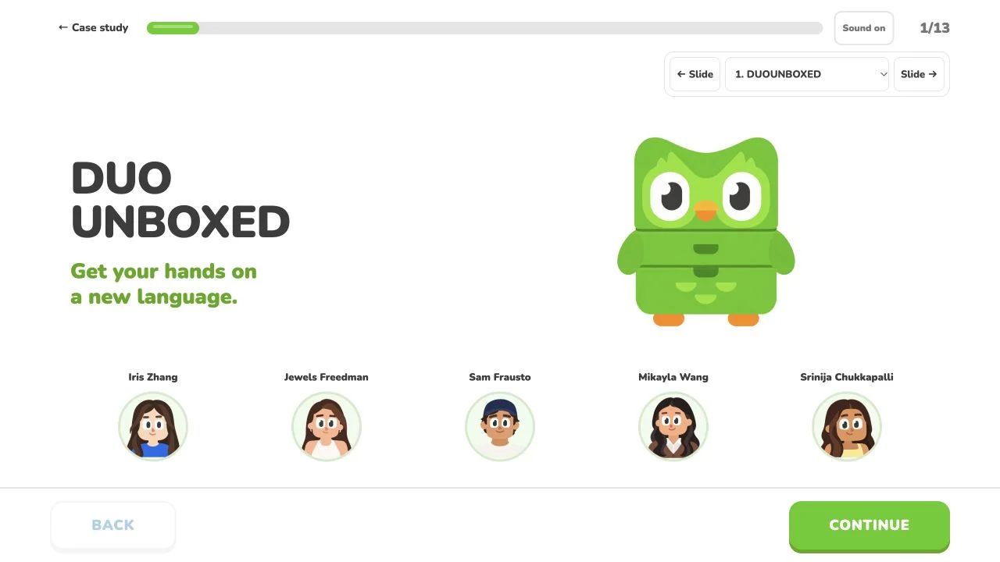
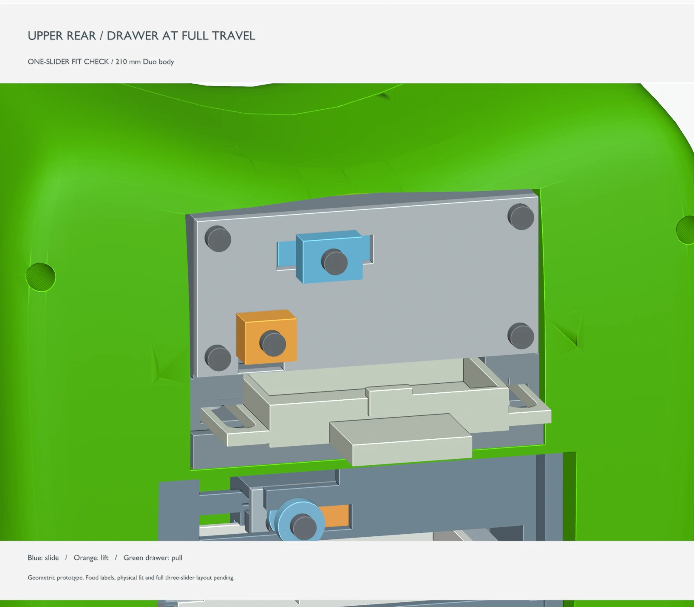
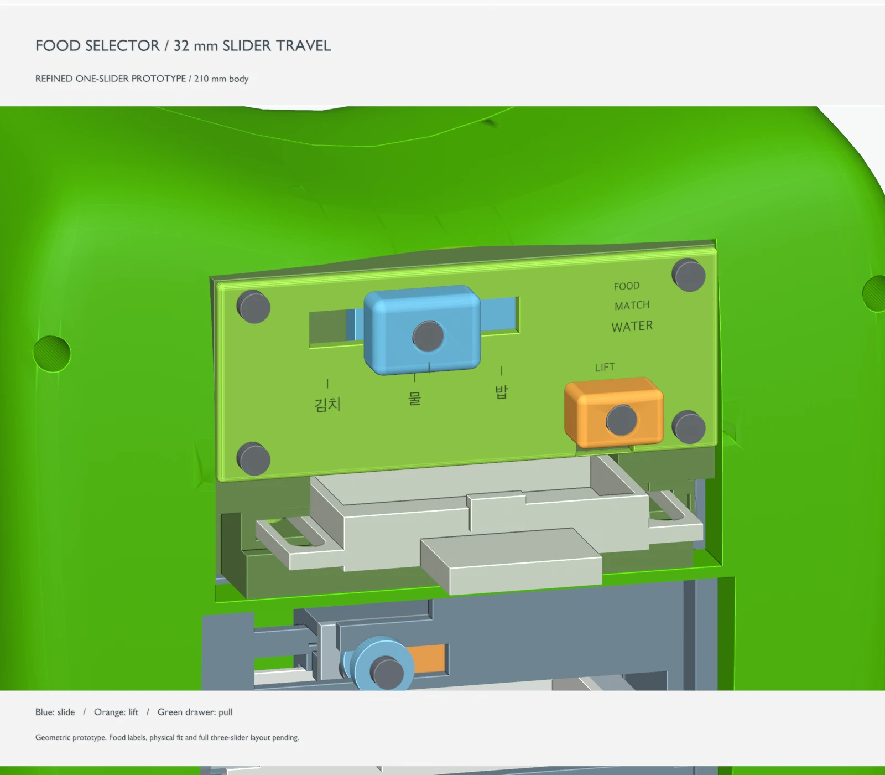
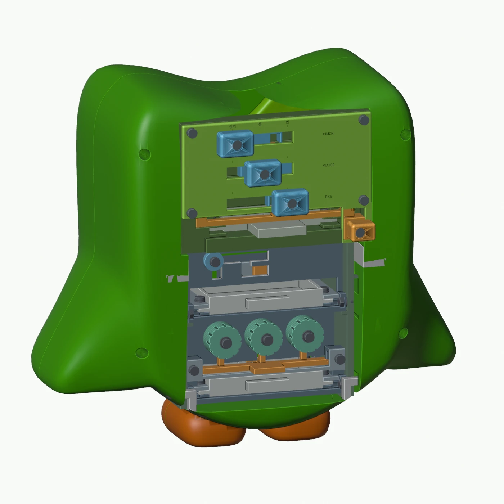
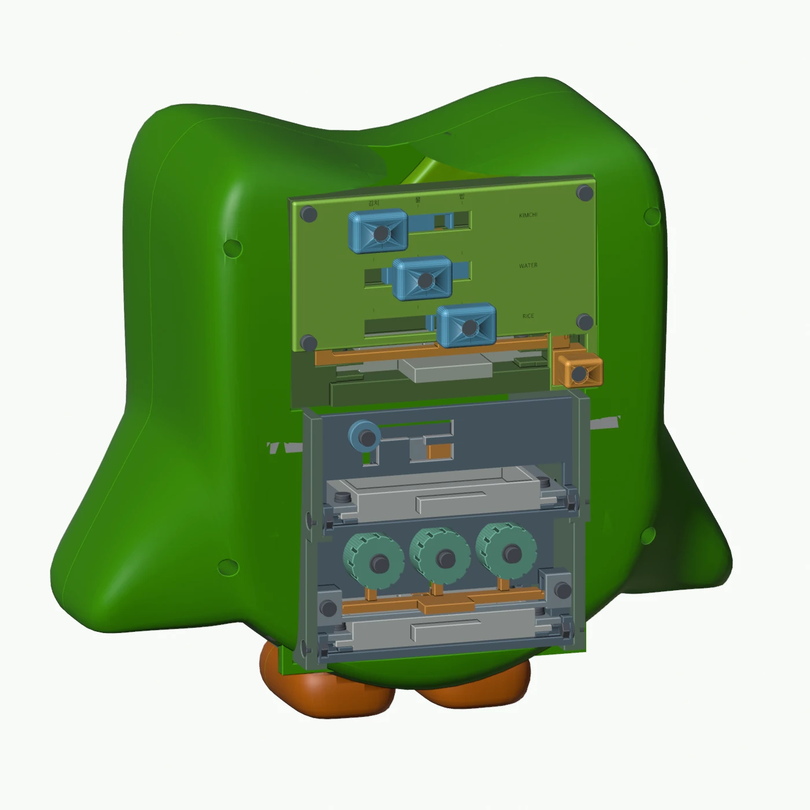
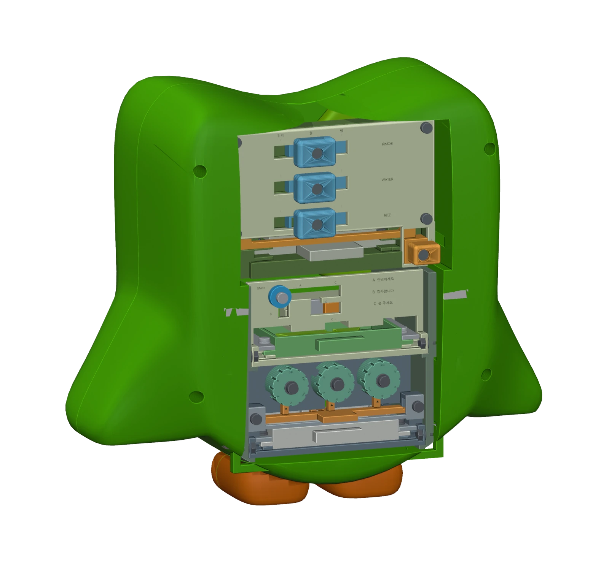
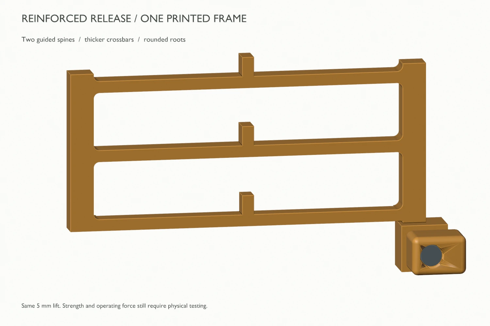
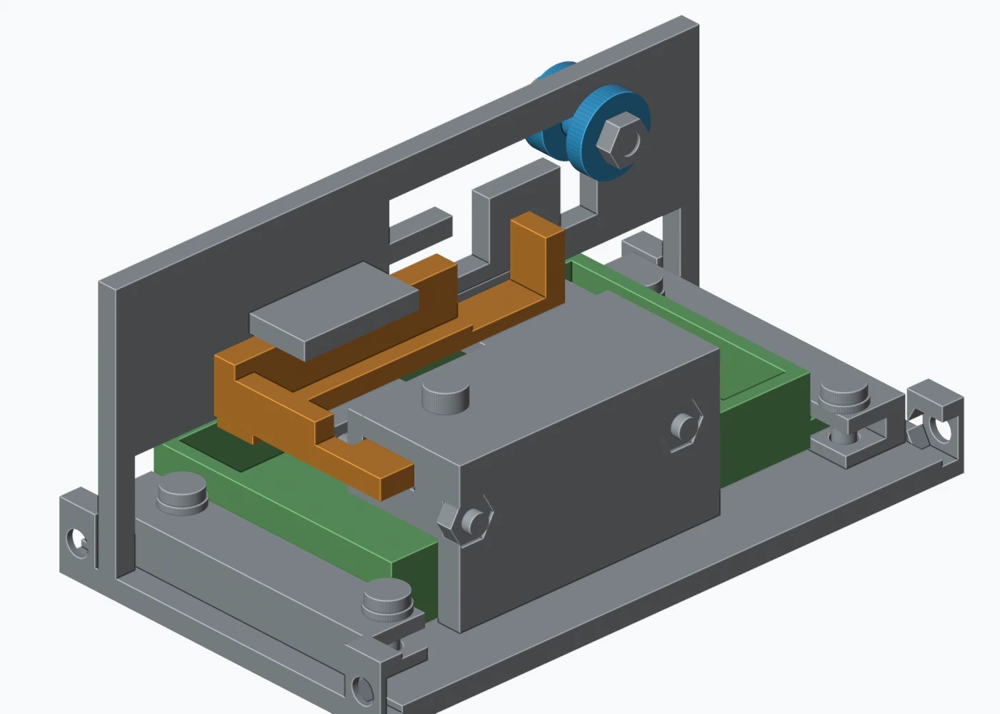
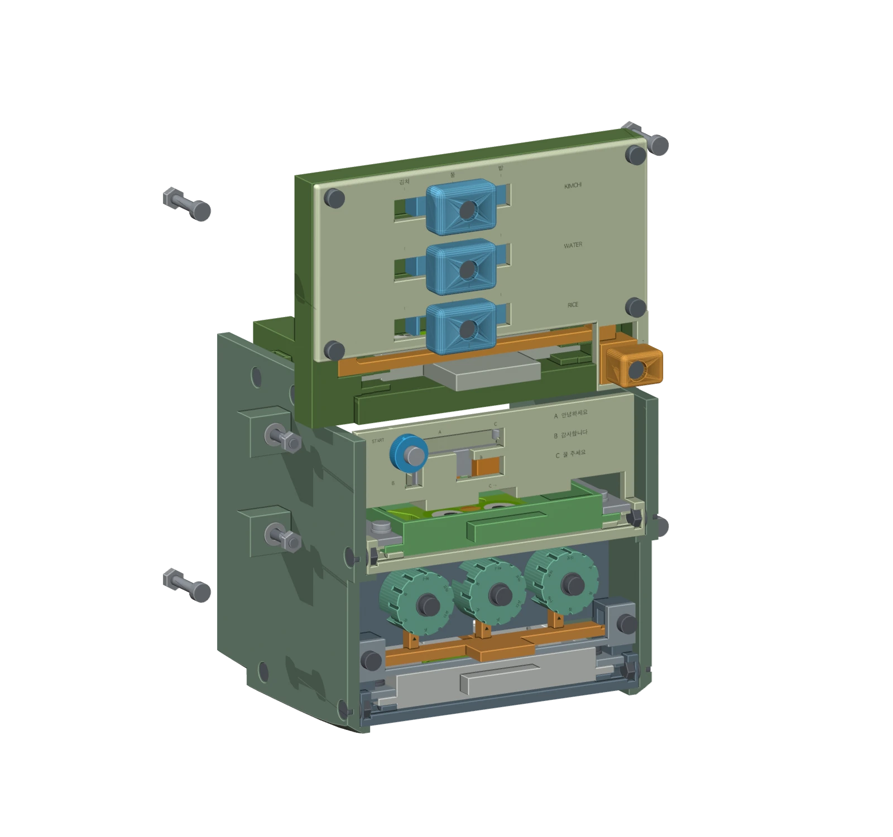

USC class project · October 2026
Duo Unboxed.
Learning beyond
the screen.
An interactive pitch and a physical puzzle box that bring language learning to the restaurant table.
Interactive pitch + printed prototype
I shaped the learning experience and puzzle-box design, and contributed to parts of the team pitch’s UI and visual design using AI assistance.

The interactive presentation
Let the audience explore the idea.
Our team pitched a restaurant experience built around short language challenges, collectible rewards, and regional pop-ups. The presentation brings that concept to life through puzzle demonstrations, character selection, and an interactive location map.

Explore the interactive pitchUI you can try
Follow the lesson flow, move through the puzzle demonstration, and explore the character and pop-up concepts.
- Interaction
- Progress, selection states, feedback, and rewards
- Visual design
- A playful language of color, character, and motion
- Format
- 13 slides with interactive demonstrations
My contribution: parts of the UI and visual design, using AI assistance, alongside the learning concept, puzzle-box design, and regional pop-up strategy. Created with Iris Zhang, Jewels Freedman, Mikayla Wang, and Srinija Chukkapalli.
USC class concept presented by our team to Duolingo designers. Proposed rewards, app connections, and pop-ups are concept demonstrations.
My contribution
Learning sequence, puzzle-box modeling and design iteration, regional pop-up strategy, and contributions to the pitch’s UI and visual design.
How I developed it
AI-assisted UI and visual design; Blender and Codex for model development, animation and review; PrusaSlicer for print preparation.
Project status
The team pitch is interactive. The physical prototype is 3D printed but not fully assembled. Physical usability and learning outcomes remain untested.
Give every action a reason.
The restaurant menu is both a Korean reference and the operating guide. Each solved activity releases a piece. In the pitch, collecting all three leads to a character reward and a proposed scan-for-XP connection.
- Count & turnFind the counts, match Korean numbers on the wheels, and release a drawer.
- Match & slideAlign kimchi, water and rice with their Korean names to earn another piece.
- Follow & retrieveUse greetings and a polite request to follow the maze, then collect the final piece.
This is the intended experience. Learning outcomes have not been tested, and the maze does not verify pronunciation.
First iteration
Give the slider room to move.
The first selector had little travel and a small control. I flagged that it looked primitive and needed more movement. The next model doubled the designed travel from 16 to 32 mm and used a larger rounded grip with clearer alignment marks.




The UX intention: make the selection action more distinct and easier to grasp. Physical comfort and operating force still need testing.
Second iteration
Fitting inside was not enough.
Once the mechanisms worked in the model, I noticed the controls were still too deep inside the bird to use comfortably. I asked to bring them toward the rear edge. That revision moved the number wheels outward 19 mm and the maze 25 mm.




The tradeoff: easier access consumed the outer envelope. I then set a clearer rule: keep mechanisms inside Duo when closed, while allowing drawers to extend during retrieval.
Protect the character. Keep the action accessible.
I rejected the earlier tall control stems and asked for a cleaner overall appearance. The current arrangement brings all three activities to the rear while retaining the recognizable front silhouette.
The current enclosed layout supersedes the outward-shift study above. The earlier 19/25 mm shifts are iteration history, not final dimensions.


Third iteration
Review the action behind the control.
I questioned whether the food release could move all three catches without breaking. I also flagged that the maze latch looked unsupported. Those concerns led to a reinforced release frame and added support close to the maze latch.




What changed in my review: I looked beyond whether a drawer opens in an animation to ask how its control is supported, held in place, reset, and accessed.
These are geometry and design reviews. They do not establish printed strength, friction, durability or safe operating force.
See the sequence in the current model.
Three different actions share one interaction rhythm: solve, release, retrieve, reset.
A 20-second edit of the saved model's prescribed animation, shown at twice its original timeline speed. It demonstrates intended movement, not physical operation.
Printed, with open questions.
The prototype was 3D printed in October 2026. It is not fully assembled. The digital package includes the labeled mechanisms, reward pieces, print plates, and assembly instructions.
The design review surfaced specific questions for any future test: can someone understand the menu, reach and move each control, retrieve the pieces, and reset the box? Physical fit, strength, and repeated operation remain unverified.

Tools, authorship & credits
My role: learning and experience concept, regional pop-up strategy, puzzle-box design direction, usability critique, and decisions on control reach, travel, support and appearance. I also contributed to parts of the presentation’s UI and visual design with AI assistance. AI assistance: Codex generated concept diagrams, Blender scripts and geometry, animations, checks and print-preparation files under my direction.
Presentation team: Iris Zhang, Jewels Freedman, Sam Frausto, Mikayla Wang, and Srinija Chukkapalli. The interactive deck is shared as a team artifact.
Base asset: “Duolingo bird” by Wiertarka, used under CC BY 4.0. Adapted with shell preparation, openings and integrated mechanisms. Rendered colors communicate the design; the printed finish is not yet verified.
Student concept inspired by Duolingo. No employment, sponsorship or official partnership is implied.